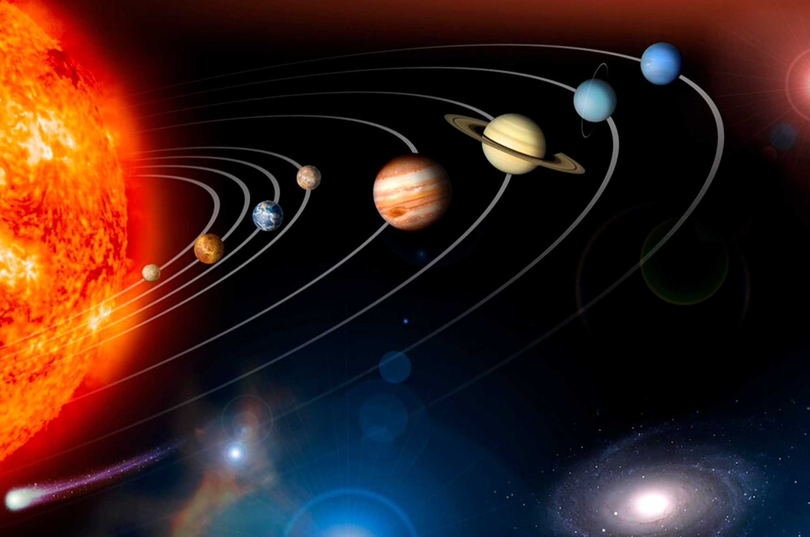
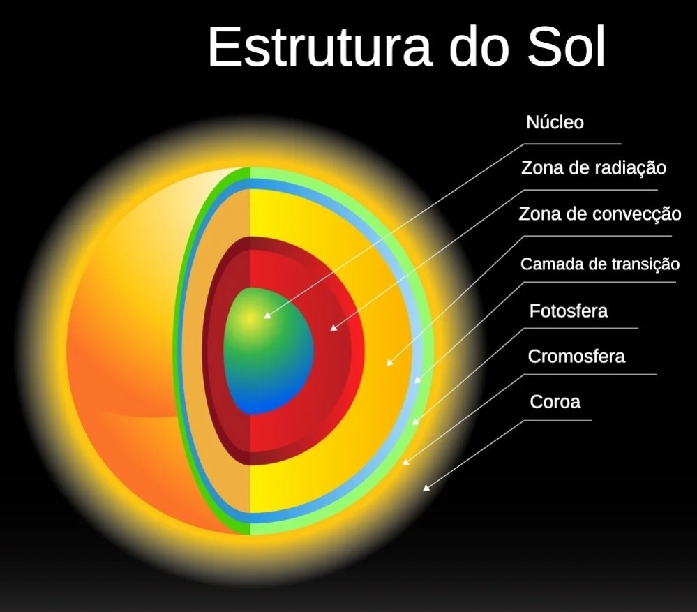
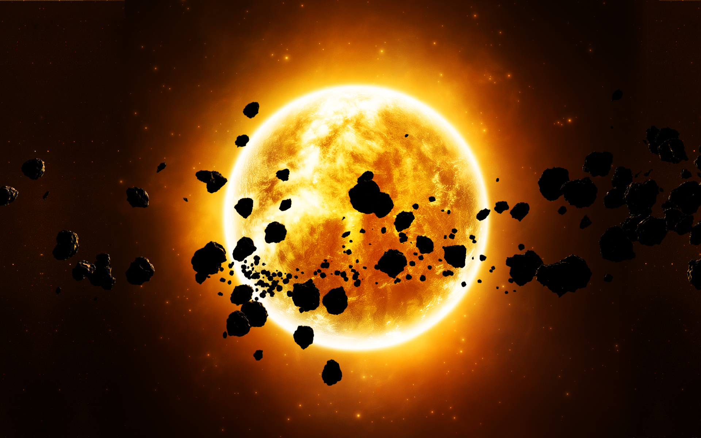

Sol
A Luminosa Estrela Guia do Nosso Sistema Solar
O Sol é uma estrela massiva que brilha intensamente devido à fusão nuclear. Ele exerce uma influência gravitacional significativa sobre os objetos em nosso sistema solar, incluindo planetas, asteroides e cometas. A gravidade do Sol é o que mantém esses objetos em órbita ao seu redor. Essencialmente, a força gravitacional do Sol puxa esses corpos celestes em direção a ele, criando trajetórias elípticas ou circulares ao seu redor.
Sistema Solar
Imagine o sistema solar como uma grande festa de dança cósmica, onde o Sol é o maestro da orquestra. O maestro, representando o Sol, fica no centro do salão e exerce sua influência sobre todos os dançarinos, que são os planetas, asteroides e cometas. Os dançarinos (planetas, asteroides, cometas) estão dançando ao redor do maestro (Sol). Eles não podem escapar da atração gravitacional do maestro, que puxa cada dançarino em uma órbita ao seu redor.
Os dançarinos (planetas, asteroides, cometas) estão dançando ao redor do maestro (Sol). Eles não podem escapar da atração gravitacional do maestro, que puxa cada dançarino em uma órbita ao seu redor. Os planetas mais próximos (como Mercúrio e Vênus) têm ritmos mais rápidos, enquanto os planetas mais distantes (como Netuno e Plutão) têm ritmos mais lentos.
Química Solar
O Sol é a fonte primária de energia para o sistema solar. A energia que emana do Sol é gerada por meio de reações de fusão nuclear no núcleo, onde o hidrogênio é convertido em hélio. Essa energia é liberada na forma de luz e calor. A luz solar viaja pelo espaço e fornece a energia necessária para aquecer a Terra e sustentar a vida.
Além de fornecer luz e calor, o Sol também afeta o clima espacial. Atividades solares, como erupções solares e ejeções de massa coronal, podem influenciar as condições na Terra, afetando a comunicação por rádio, redes elétricas e sistemas de posicionamento global (GPS).
O Sol é principalmente composto de hidrogênio (cerca de 74% de sua massa) e hélio (cerca de 24%). Os elementos restantes, como oxigênio, carbono, nitrogênio e traços de outros elementos, compõem a pequena porcentagem restante da massa solar.
Camadas Solares
Núcleo - parte mais quente e com maior quantidade de massa do Sol. Tem cerca de 139 mil quilômetros. É na região do núcleo que é produzida a energia solar.
Zona de radiação - nessa zona, a energia do núcleo propaga-se através da radiação. A energia do núcleo do Sol pode levar mais de 100 000 anos para atravessar essa camada
Zona de convecção - é a porção do Sol onde ocorrem as correntes de convecção de calor. Essas correntes levam a energia para a parte externa da superfície solar.
Fotosfera - é a parte visível a Terra. Tem 500 km de espessura. Nessa camada são encontradas manchas escuras, conhecidas como manchas solares.
Cromosfera - é a parte onde ocorre a transição entre a fotosfera e a coroa do Sol. Camada estreita, rarefeita e externa à fotosfera. É avermelhada e fica visível apenas em eclipses.
Coroa - é constituída por plasma. É a parte luminosa do Sol. Nessa região, a temperatura atinge 2 milhões de graus Celsius. É uma camada extensa, rarefeita e externa à fotosfera.
Curiosidades
Manchas Solares: O Sol não é uniformemente brilhante. Ele tem manchas solares, que são áreas mais escuras causadas por campos magnéticos intensos. Elas têm uma influência na atividade solar, afetando as condições climáticas espaciais na Terra.
Ciclo Solar: O Sol passa por um ciclo aproximadamente a cada 11 anos, conhecido como ciclo solar. Durante o pico do ciclo, ocorrem mais manchas solares e atividade solar, afetando as comunicações e a tecnologia aqui na Terra.
Vida do Sol: O Sol tem cerca de 4,6 bilhões de anos e provavelmente continuará brilhando por mais bilhões de anos antes de se transformar em uma gigante vermelha e, eventualmente, em uma anã branca.
Por fim, O Sol é verdadeiramente o centro do nosso sistema solar, fornecendo luz, calor e energia para todos os planetas e objetos que orbitam ao seu redor. É uma estrela notável que desempenha um papel fundamental na manutenção da vida na Terra e na dinâmica de todo o sistema solar.
